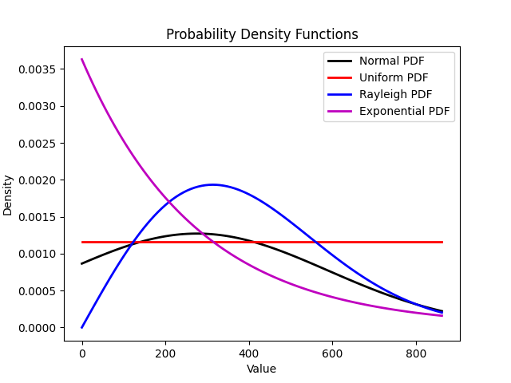

Datos obtenidos apartir de los analisis antes decriptos en la seccion de codigo
Análisis de la Irradiancia Solar Global (GHI)
Generación del Histograma de GHI
En esta sección, nos enfocamos en la creación de un histograma para la variable GHI (Global Horizontal Irradiance). El objetivo de este análisis es visualizar la distribución real de los datos de GHI, lo que nos permitirá, en futuros análisis, definir una función de densidad de probabilidad (PDF) adecuada.
Objetivos
- Visualización de la Distribución de Datos: El histograma proporciona una representación gráfica de la distribución de la variable GHI. Esto nos permite observar cómo se distribuyen los valores de irradiancia a lo largo del tiempo.
- Identificación de Valores Clave: A través del histograma, podemos identificar rangos de valores donde la irradiancia es más frecuente, así como detectar la presencia de valores atípicos o extremos.
- Base para Modelos Probabilísticos: La comprensión de la distribución de GHI es crucial para definir posteriormente una función de densidad de probabilidad que modele estos datos de manera precisa.
Procedimiento
- Cálculo del Histograma: Se utiliza la variable GHI para generar el histograma. Esto implica agrupar los datos en intervalos (o bins) y contar el número de ocurrencias en cada intervalo.
- Visualización: El histograma resultante se visualiza para proporcionar una representación clara de la distribución de GHI.
Interpretación del Histograma
- Valores Altos y Bajos: El histograma mostrará intervalos con diferentes frecuencias, indicando los valores altos y bajos de irradiancia. Estos datos son esenciales para entender los patrones de irradiancia solar.
- Valores en Cero: Es posible observar intervalos con valores en cero, lo que indica periodos sin irradiancia solar, como durante la noche o en condiciones meteorológicas adversas.
Importancia del Análisis
El análisis de la distribución de GHI mediante histogramas es un paso fundamental en el estudio de la irradiancia solar. La información obtenida permite:
- Mejorar la Eficiencia de Sistemas Solares: Conocer la distribución de GHI ayuda a optimizar el diseño y la operación de sistemas de energía solar.
- Predicción de Producción de Energía: La distribución de GHI es un factor clave en los modelos predictivos de producción de energía solar, permitiendo estimaciones más precisas y fiables.
Análisis de Distribuciones de Densidad de Probabilidad para GHI
Se utilizan las cuatro distribuciones de densidad de probabilidad vistas en el curso con el objetivo de observar si alguna de estas toma una forma similar al histograma mencionado anteriormente. Las distribuciones consideradas son: normal, Rayleigh, uniforme y exponencial.
Distribuciones Consideradas
Distribución Normal
Esta distribución es simétrica y se caracteriza por su forma de campana, determinada por su media y desviación estándar.
Distribución de Rayleigh
Esta distribución es adecuada para datos que representan magnitudes resultantes de componentes vectoriales independientes y normalmente distribuidos.
Distribución Uniforme
Esta distribución asume que todos los valores dentro de un intervalo específico tienen la misma probabilidad de ocurrencia.
Distribución Exponencial
Esta distribución modela el tiempo entre eventos en un proceso de Poisson, caracterizada por una tasa constante.

Procedimiento de Análisis
El análisis consiste en superponer las curvas de estas distribuciones sobre el histograma de los datos de GHI para identificar cuál se ajusta mejor a la distribución observada. Este proceso ayudará a definir una función de densidad de probabilidad que modele los datos de manera precisa y efectiva.
Resultados del Análisis con la Distribución Normal
Al utilizar la distribución normal se llegaron a los siguientes resultados del análisis:
Resultados del Análisis de Datos
Estos resultados indican que la distribución normal puede ser una buena aproximación para modelar los datos de GHI en su rango más común, aunque se debe considerar su limitación en los extremos. En el último punto, se considera la limitación en los extremos y durante el período nocturno, donde los valores de radiación solar son cero durante muchas horas. Para un análisis más preciso, se puede eliminar este periodo y realizar el análisis solo para valores no nulos. Además, se planea ajustar el sistema de alarmas en el futuro para determinar con mayor precisión cuándo comienza y termina el pico de irradiación, evitando así la recopilación de datos que se sabe que son cero.